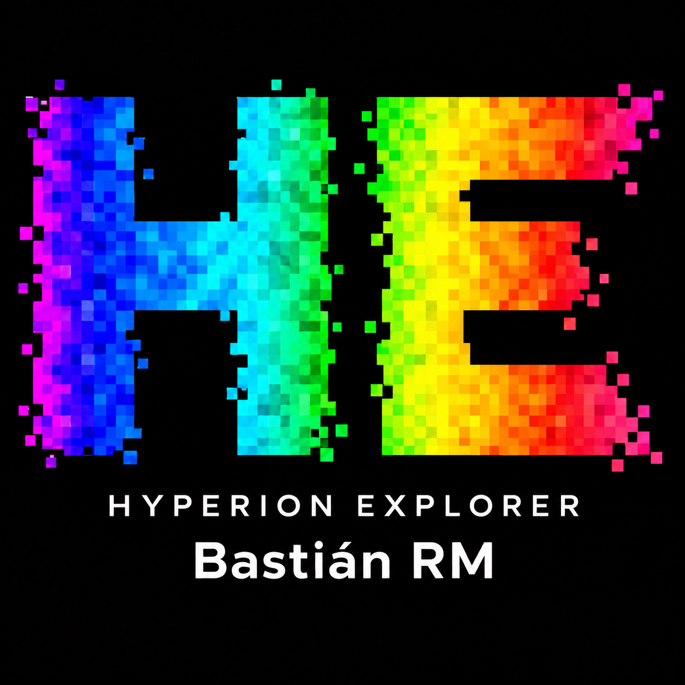

01
Ciencias Forestales
Estructura, manejo y funcionamiento de ecosistemas forestales.
DendrometríaSilviculturaHidrología ForestalClimatologíaCuencasIncendios ForestalesViveros
Desarrollo y aplico herramientas computacionales para estudiar sistemas forestales y ambientales mediante información espacial, temporal, espectral y tridimensional.
Un perfil interdisciplinario que integra ciencias forestales, hidrología, información geoespacial, programación, inteligencia artificial y tecnologías tridimensionales.
Estructura, manejo y funcionamiento de ecosistemas forestales.
Observación de la Tierra y análisis espacial ambiental.
Programación científica y análisis de datos ambientales.
Representación tridimensional y caracterización digital de plantas.
Representación cuantitativa de procesos hidrológicos y respuesta de cuencas.
Flujos de trabajo que integran adquisición y preparación de datos, procesamiento, modelación, validación y generación de información útil para investigación o gestión.
Modelos tradicionales y aprendizaje automático para estimación y predicción de caudales y respuesta de cuencas.
Procesamiento de información raster y series temporales preservando la distribución espacial de las variables.
Análisis espacial y espectral para estudiar condición, estrés y respuestas fisiológicas de plantas.
Reconstrucción tridimensional y extracción de características morfológicas, arquitectónicas y biométricas.
Selección de trabajos, desarrollos y líneas que representan mi trayectoria y proyección actual.
Diseño y desarrollo del sitio web del laboratorio, organizado para comunicar proyectos, equipo, servicios, publicaciones, equipamiento y recursos.
GitHub Pages · HTML · CSS · JavaScript · Automatización
Visitar HydroGeoAI Lab
Hyperion ExplorerAplicación desarrollada en Google Earth Engine para explorar y analizar información hiperespectral de EO-1 Hyperion mediante una interfaz web interactiva.
Google Earth Engine · Hyperion · JavaScript · Visualización
Abrir Hyperion ExplorerComparación del desempeño de SRM y la familia GRxJ, con y sin CemaNeige, para simulación diaria de caudales en cuencas chilenas con regímenes hidrológicos contrastantes.
SRM · GRxJ · CemaNeige · QSWAT · R-SWAT
Ver publicación asociada
Desarrollo y comparación de flujos de reconstrucción mediante Structure from Motion, Multi-View Stereo y 3D Gaussian Splatting.
SfM · MVS · 3DGS · Nubes de puntos

Uso de imágenes y reconstrucciones 3D para caracterizar estructuras vegetales y obtener variables morfológicas, arquitectónicas y biométricas.
Visión computacional · 3D · Segmentación · Morfometría

Procesamiento de nubes de puntos para caracterizar vegetación en torno a redes eléctricas y derivar altura, densidad, proximidad, prioridad y potenciales plazos de intervención.
LiDAR · Point Clouds · CHM · Análisis espacial
Exploración de modelos como LSTM, GRU y XGBoost para estimar variables de interés a partir de información climática, hidrológica y ambiental.
LSTM · GRU · XGBoost · Series temporales
Flujos orientados a utilizar variables ambientales representadas como raster para modelar su evolución espacial y temporal.
Raster · Sentinel-2 · MODIS · CNN · ConvLSTM
Investigación del uso de información hiperespectral y redes neuronales para clasificar condiciones fisiológicas de plantas, incluyendo estrés hídrico.
Hiperespectral · 3D-CNN · Clasificación
Proyección de métodos para identificar y cuantificar hojas, tallos, ramas y flores directamente sobre modelos tridimensionales.
3D · Segmentación · Deep Learning · Morfometría
Trabajos científicos y resultados asociados a las líneas de investigación desarrolladas.
Participación en guía y co-guía de tesis, memorias y trabajos de titulación vinculados a ciencias forestales, teledetección y análisis ambiental.
Software, lenguajes y plataformas utilizados en mis flujos de trabajo.
Cursos orientados al procesamiento, interpretación y análisis de información espacial aplicada a recursos naturales y ambiente.
Formación práctica para automatizar análisis y trabajar con datos ambientales mediante herramientas computacionales.
Contenidos enfocados en reconstrucción 3D, procesamiento de imágenes y metodologías emergentes aplicadas a investigación.
Perfiles académicos, profesionales y repositorios de código.